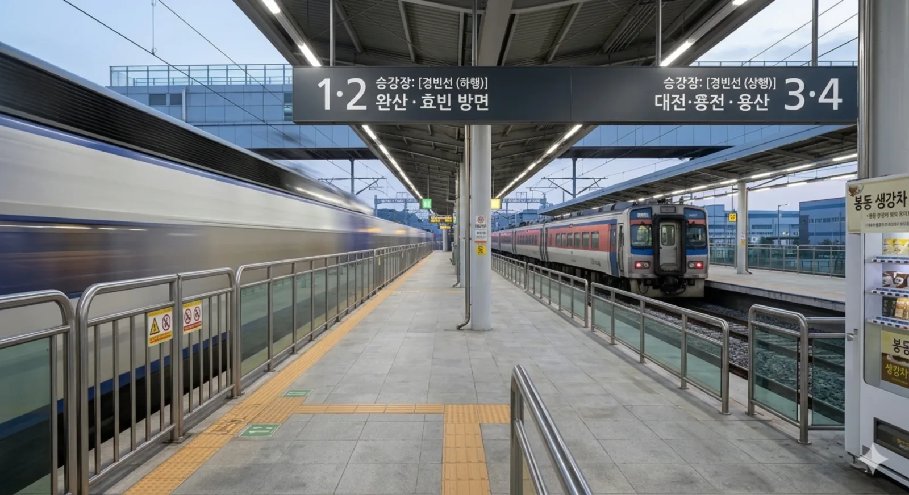

봉동역
최근 수정 시각: 2026-03-08 00:40:00
토론
편집
역사
★
1. 개요
경빈선의 철도역. 전북특별자치도 완주군 봉동읍 장기리 1173-13 소재.
완주군 봉동읍의 중심지이자, 인근에 위치한 완주산업단지의 관문 역할을 하는 철도역이다. ITX-새마을과 무궁화호가 정차하며, 산단 근로자들과 완주군 북부 지역 주민들의 든든한 발이 되어주고 있다.
2. 역 정보
대전과 전주 사이에 뻥 뚫린 선형을 자랑하는 경빈선 구간 중, 양촌신호장(논산)을 지나 전주시로 진입하기 직전에 자리 잡은 알짜배기 일반 열차 정차역이다. 봉동읍 일대가 산업단지 덕분에 완주군 내에서 인구가 상당히 많은 편이라 기본 수요가 탄탄하게 받쳐준다.
다만, 다음 역인 송천(에코시티)역과 다다음 역인 전주 최고의 기차역 완산역의 위용이 워낙 막강한 탓에, KTX는 이 역을 매정하게 쌩 하고 무정차 통과해버린다. 고속열차가 통과할 때마다 역 전체가 흔들리는 듯한 풍압을 느낄 수 있다. 승강장 스크린도어 필수 구역
3. 승강장
2면 4선의 쌍섬식 승강장 구조이다. KTX가 미친 속도로 통과해야 하기 때문에 바깥쪽(본선) 선로를 통과선으로 사용하고, 여객 취급은 안쪽(부본선)에서 주로 이루어지는 전형적인 고속철도 대피역의 형태를 띠고 있다.

봉동역 승강장 전경
| 번호 | 노선 | 행선지 |
|---|---|---|
| 1·2 | 경빈선 (하행) | 송천·완산·정읍·효빈 방면 |
| 3·4 | 경빈선 (상행) | 대전·천안·수원·용산 방면 |
4. 역 목록
5. 연계 교통

봉동역 광장 버스정류장
-
완주·전주 시내버스
- 지선·마을 300, 500, 535, 541, 543 등 (완주산단, 삼례 방면)
- 간선 309, 383 (전주시내 연계)
- 역 앞에서 완주산업단지 구석구석으로 들어가는 버스 노선들이 잘 갖춰져 있어 출퇴근 수요를 꽉 잡고 있다.
6. 여담
-
생강의 고장, 기차역에서도 생강 냄새가?
완주군 봉동읍의 특산물은 뭐니 뭐니 해도 생강이다. 수확철이 되면 역 광장 근처는 물론 열차 대합실까지 알싸하고 건강해지는(?) 생강 향이 은은하게 퍼진다는 전설이 있다. 봉동 생강차 한 잔 뽑아먹고 열차 타는 게 국룰 -
출퇴근 시간 한정 헬게이트
완주산업단지(현대자동차 전주공장, KCC 등 굵직한 기업들 위치)를 배후에 두고 있다 보니, 평시에는 한산하던 역이 아침 출근 시간과 저녁 퇴근 시간만 되면 공단 근로자들로 바글바글해진다. 특히 무궁화호가 한 대 정차할 때마다 엄청난 인파가 쏟아져 나오는 진풍경을 볼 수 있다. -
KTX 탈 거면 버스 타고 송천으로
역 시설물 자체는 상당히 웅장하지만, 앞서 서술했듯 KTX는 자비 없이 역을 통과한다. 봉동 주민들이나 산단 출장객들이 KTX를 타야 할 일이 생기면, 눈물을 머금고 봉동역을 뒤로 한 채 버스를 타고 전주의 송천역이나 익산역까지 가야 하는 서러움이 있다. 그래도 ITX-새마을이 서주는 게 어디냐며 위안 삼고 있다.